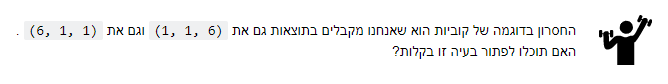
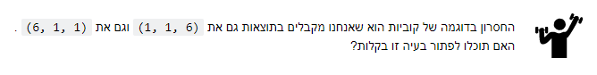

היי,
מודה שהמחברת הזאת לא קלה לעיכול (בקטע טוב)
נתקעתי קצת בתרגילון הזה:

הצלחתי לפתור, אבל לא רק באמצעות generator expression, כי הוא מספק לנו איבר אחד כל פעם, פיספסת דרך לעשות את זה בתוך ה-generator expression, או שאין?

היי,
מודה שהמחברת הזאת לא קלה לעיכול (בקטע טוב)
נתקעתי קצת בתרגילון הזה:

הצלחתי לפתור, אבל לא רק באמצעות generator expression, כי הוא מספק לנו איבר אחד כל פעם, פיספסת דרך לעשות את זה בתוך ה-generator expression, או שאין?
תזכרי בתכונות המדהימות של set, יכול לעזור לא מעט !
זוכרת, אכן מדהימות 
וזאת בדיוק השאלה שלי, שאני יוצרת generator expression הוא מספק לי איבר אחד כל פעם, אחר כך אני יכולה להשתמש בset, השאלה אם בתוך הביטוי זה יכול לקרות.
במילים אחרות, האם התרגיל יכול להפתר בשורה אחת?
לא בידיוק בשורה אחת, אבל כן ב-expression אחד.
אני מרשה לעצמי טיפה לענות יותר בחופשיות כי זה לא תרגיל להגשה, אבל אנסה עדיין להשאיר לך קו מחשבה -
תחשבי מה נגיד דומה בין הקוביות (או איך לגרום להן להיות דומות)
1, 1, 6
ו- 6, 1, 1
הצלחתי את התרגיל. ארשה לעצמי גם רגע לדבר בחופשיות
עשיתי בexpression אחד, ובשורה שאחרי לעשות בעצם set לערכים שמגיעים ממנו. השאלה שלי פשוטה ואולי התשובה שלה היא פשוט לא…
תחשבי שאם את “מסדרת” את ההטלות ומכניסה אותן לקבוצה מה יקרה.
בהגנרייטור שנוצר בcomprehension עובד כמו גנרייטור רגיל וזורק כל פעם ערך אחד החוצה כאשר הוא מופעל
(לא כמו נגיד list comprehension שפשפוט מחזיר רשימה של כל האוספים שהוא מייצר)
ולכן לדעתי, אם אתה רוצה לעשות איתו, את צריכה לאסוף מחוץ לגנרייטור את כל הערכים האלה ואז לעשות איתם משו.
אחרת הוא יחזיר את כל האופציות האפשריות.
יש גם דרך אחרת לפתור את זה, מעט יותר אלגנטית בעיניי שלא מערבת לא סידור (לא באופן ישיר) ולא סט, ומשאירה את זה כפתרון של שורה אחת
אני חושב שאת זה היא דווקא הבינה היא שאלה על לעשות את זה עם generator expression
נפל האסימון
Set Comprehensions במקום generator expression.
סיקרנת אותי חחחח
מעולה, אז אני אשאיר לך את זה כחומר למחשבה ואם לא תעלי על זה תשלחי לי הודעה עוד כמה ימים
מרגיש כאילו דחפו אותי מההר שעמדתי עליו אחרי שאמרת את זה
נשמע לא פשוט
יותר פשוט ממה שאתה מאמין
שאת אומרת ללא סידור את מתכוונת ללא פונקציית סידור ?
בהחלט
הצחלתי ! וצודקת זה אכן אפשרי 
מצטרף לשאלה. בזבזתי יותר מדי זמן על זה ואני מרגיש שהפתרון אדיוטי להחריד.
תמשיך בינתיים ותחשוב על זה עוד קצת בהמשך. אם לא תצליח עוד כמה ימים תשאל בפרטי
מרשה לעצמי -
הסתכלתי, חשבתי, עזבתי, חזרתי
הייתה לי את ההרגשה הזו שהמילה עומדת לי על קצה הלשון, אבל אני לא בדיוק יכולה לחשוב עליה, כאילו ראיתי את זה, אבל זה לא בדיוק הסתדר לי (מכירים?)
אז ציירתי. את הטלת הקוביות ואת כל האופציות (וצורות גיאומטריות רלוונטיות). ואז נפל לי האסימון.
אבל זה נראה לי גם לגיטימי להשאיר את זה לאחרי כל תרגילי השבוע 
הכוונה כאן היא שאם יש 1,1,1 לקבל פלט שהוא 1 ולא שלוש אחדות?